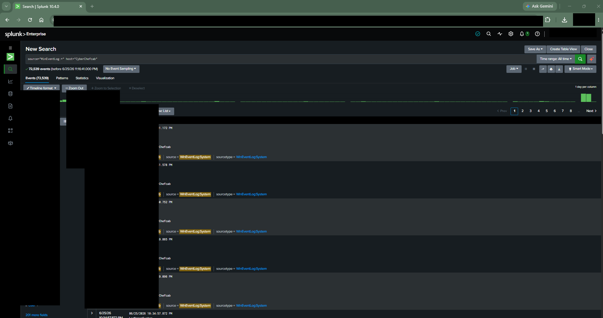

Recruiter-facing, public-safe summary of the CyberChefcab Home Lab used to develop practical cybersecurity
skills across nearly three years of hands-on work.
3+ Years Hands-On Experience16+ Published SIEM Artifacts9 Security Domains Demonstrated8 Active Lab Environments
Splunk
Kali Linux
Wireshark
PowerShell
Git
Windows
Linux
DFIR
NIST
Cloud Security
DevSecOps
Recruiter Value
This lab demonstrates applied cybersecurity capability beyond certification study. It connects security
operations, evidence handling, governance, cloud security, and secure documentation into a practical
environment that reflects real analyst workflows.
Executive Overview
The CyberChefcab Home Lab is an enterprise-inspired cybersecurity environment used to build practical skills
in SOC operations, incident response, digital forensics, GRC, cloud security, network engineering, DevSecOps,
and secure architecture review. This page provides a public-safe skills showcase grounded in sanitized,
evidence-driven portfolio work.
Used to baseline normal authentication behavior and user session patterns.
Active
4625
Failed logon
Used for brute-force and unauthorized access triage hypotheses.
Active
4634
Logoff
Used for session lifecycle review and timeline validation.
Active
4648
Explicit credential usage
Used to identify explicit credential use patterns requiring analyst review.
Active
4672
Privileged logon
Used to monitor elevated privilege activity and high-value access events.
Active
4688
Process creation
Used to inspect process execution behavior and potential suspicious chains.
Active
4768
Kerberos authentication
Used to support authentication visibility and identity-centric investigations.
Active
Evidence Gallery
Public-safe evidence below is drawn from the existing sanitized artifact set and demonstrates the live
relationship between lab architecture and SOC analysis workflows.

Findings or Outcomes
Established repeatable telemetry-to-evidence workflow suitable for recruiter-facing documentation.
Validated practical SOC, IR, and detection analysis coverage in a controlled lab setting.
Improved evidence governance discipline through source preservation and redaction controls.
Lessons Learned
Strong documentation and evidence governance are as important as technical execution.
Domain mapping improves clarity when presenting broad cybersecurity skill development.
Public-safe publication controls enable transparent capability demonstration without overexposure.